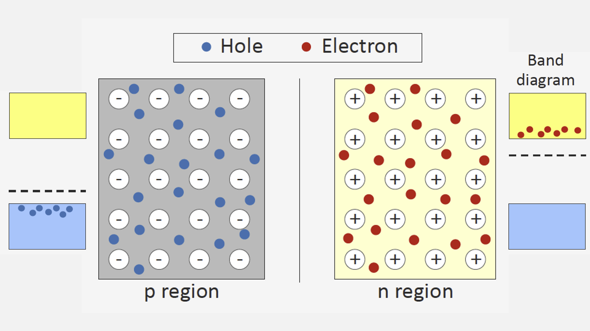
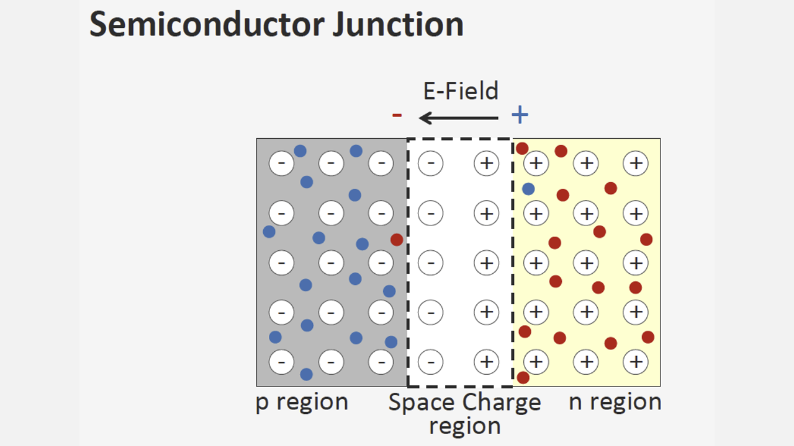

다이오드와 P-N 접합 구조
다이오드의 구성
우리는 이전 챕터들에서 반도체만이 가지는 특성을 배웠고, 반도체의 전류 특성을 개선하기 위해 도핑 과정을 거친다는 것을 알았으며 그 도핑 물질에 따라 p형 반도체와 n형 반도체로 구분한다는 것도, 캐리어가 무엇인지도 알게 되었습니다. 그렇다면 다이오드는 무엇일까요? 다이오드는 p형 반도체와 n형 반도체를 서로 접합시킨 복합 반도체입니다. p형 반도체와 n형 반도체를 굳이 왜 이어붙이는지, 접합시키면 어떠한 현상이 일어나는지 지금부터 차근차근 알아가보도록 하겠습니다.P-N 접합시 일어나는 현상
각 물질은 고유한 밴드갭과 Fermi Level(전자의 수위)을 가진다고 했습니다. 도핑 전 실리콘은 그 Fermi Level이 같을지 몰라도, 도핑 과정을 거친 p형 반도체와 n형 반도체는 서로 다른 Fermi Level을 가지고 있습니다. n형 반도체는 캐리어인 여유 전자가 많으므로 그만큼 전자 수위가 높아질 것이고, p형 반도체는 캐리어인 여유 정공이 많으므로 반대로 전자 수위는 낮아질 것입니다. p형 반도체와 n형 반도체의 내부 상태를 표현하면 다음 그림과 같이 표현할 수 있습니다.
위 그림에서, -와 +로 표현된 입자는 원자의 중심에 고정된 원자핵을 의미하며, 주의에 있는 작은 점들은 원자핵의 인력에서 벗어나 전도전류를 만들 수 있는 캐리어입니다. 이러한 p형 반도체와 n형 반도체를 일부 접합하게 되면, 다음과 같이 됩니다.

p형 반도체에 존재하는 acceptor의 원자핵(=음전하)과 n형 반도체에 존재하는 donor의 원자핵(=양전하)은 고정되어 있지만, 그로부터 떨어져 나온 carrier는 자유롭게 이동할 수 있습니다. 따라서, 점선으로 표시된 영역에 있는 전자와 정공은 서로에게 이끌려 소멸합니다. 아래 그림은 점선 영역의 carrier인 전자와 정공이 모두 합쳐져 소멸된 상태를 보여주고 있습니다

점선으로 표시된 영역의 carrier는 모두 소멸하였는데요, 이제 남은 건 각 타입의 반도체에 사용했던 doper인 donor와 acceptor의 원자핵 뿐입니다. 점선 영역에서 n타입 반도체의 원자핵은 p타입 반도체의 원자핵과 달리 양전하를 띠고 있기에, +에서 -로 전기장이 형성됩니다. 이렇게 원자핵만 덩그러니 남아있는 영역을 공핍층(depletion layer)이라 하는데요, 모두 알다시피 같은 극성끼리는 척력이 발생하고, 다른 극성끼리는 인력이 발생합니다. 공핍층 바깥에는 여전히 carrier가 남아있지만, p타입에 있는 정공은 공핍층의 + 원자핵에 가로막히고, n타입에 있는 전자는 공핍층의 - 원자핵에 가로막히게 되어 carrier가 이동하지 못하게 됩니다. 이렇게, 서로 다른 carrier를 가지는 반도체를 접합시켰음에도 불구하고 내부에서 자유롭게 이동가능한 carrier가 모두 소멸하지 않고 공핍층 바깥 영역에 여전히 존재하는 평형 상태를 유지하게 됩니다. 다음 챕터에서는, 왜 이러한 반도체 접합(=다이오드)이 정류작용을 할 수 있는지 알아보도록 하겠습니다.